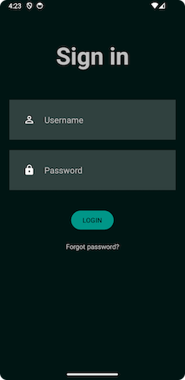

In the game Wordle, players must guess a secret 5 letter word in 6 or less attempts. After each guess, clues are given to the player
If a letter is in the word and in the correct location, the block will be highlighted green.
If a letter in in the word but in the wrong locations, the block will highlighted yellow.
The app should be able to store data on a Firebase database.
The app should have a specific login screen, with an appearance similar to the one below:
In this project, one must implement a Healthcare Appointment Management System (HAMS) for a telehealth clinic. HAMS is a mobile application designed to streamline the process of healthcare appointment scheduling and management.
The app should support three types of users: Patient, Doctor, and Administrator, and features such as logging in, signing up, logging off, and has its data securely stored and authenticated online using Firebase's Realtime Database.
The app should be able to store data on a Firebase database.
The app should have a specific login screen, with an appearance similar to the one below: